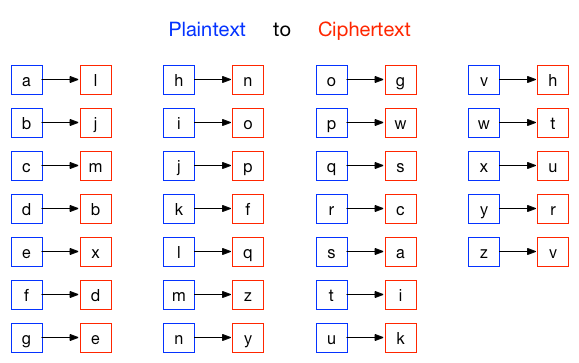

3. String Methods¶
Quick Overview of Day
WDTPD string questions. Practice problems with string manipulation. Introduction to additional string methods. Time to catch up on any string practice problems not completed on previous days.
- CS20-CP1 Apply various problem-solving strategies to solve programming problems throughout Computer Science 20.
- CS20-FP1 Utilize different data types, including integer, floating point, Boolean and string, to solve programming problems.
- CS20-FP2 Investigate how control structures affect program flow.
- CS20-FP3 Construct and utilize functions to create reusable pieces of code.
3.1. What Does This Program Do?¶
Note
Your teacher may choose to use the following examples as a class activity, by displaying the examples, and having you take a guess as to what you think each will do before running the code.
What will the following programs output? Why?
The following program has two errors. Can you find and fix them?
3.2. Letter Counting¶
By looking at each letter of a peice of text, you can create a frequency analysis, which tells you how often you should expect certain letters to appear in a passage of text. This gives you hints if you are trying to solve a cryptoquip in your local newspaper, or attempting to crack a message that is encrypted using a classical cipher (such as the Caesar cipher).
The code below assigns a variable paragraph in the program a triple-quoted string that contains a paragraph of text. The function count determines the number of alphabetic characters (a through z, or A through Z) in the text and then keeps track of how many are the letter ‘e’. Finally, the function prints an analysis of the text like this:
Your text contains 243 alphabetic characters, of which 109 (44.8%) are 'e'.
Note
Adapt the code above so that it:
- analyses a different paragraph of text (perhaps your favorite poem, saying, etc.)
- improve the print statement to not have extra spaces (you will need to use concatenation)
- use the round function to improve the readability of the percentage calculated (round the percentage to 2 decimals)
- change the function so that you can pass in (as an argument) which character you want to count
Note
A possible extension to this demonstration is using the requests module (in Thonny, select Tools -> Manage Packages, then search for and install requests). Using requests allows you to extract data from websites, such as Project Gutenberg, as follows:
import requests
# retrieve the full text of The Importance of Being Earnest
the_url = "http://www.gutenberg.org/cache/epub/844/pg844.txt"
paragraph = str(requests.get(the_url).content)
# run the frequency analysis as before
3.3. String Methods¶
We previously saw that each turtle instance has its own attributes and a number of methods that can be applied to the instance. For example, we wrote tess.right(90) when we wanted the turtle object tess to perform the right method to turn to the right 90 degrees. The “dot notation” is the way we connect the name of an object to the name of a method it can perform.
Strings are also objects. Each string instance has its own attributes and methods. The most important attribute of the string is the collection of characters. There are a wide variety of methods. Try the following program.
In this example, upper is a method that can be invoked on any string object
to create a new string in which all the characters are in uppercase. lower works in a similar fashion changing all characters in the string to lowercase. (The original string some_string remains unchanged. A new string other_string is created.)
In addition to upper and lower, the following table provides a summary of some other useful string methods. There are a few activecode examples that follow so that you can try them out.
| Method | Parameters | Description |
|---|---|---|
| upper | none | Returns a string in all uppercase |
| lower | none | Returns a string in all lowercase |
| capitalize | none | Returns a string with first character capitalized, the rest lower |
| strip | none | Returns a string with the leading and trailing whitespace removed |
| lstrip | none | Returns a string with the leading whitespace removed |
| rstrip | none | Returns a string with the trailing whitespace removed |
| count | item | Returns the number of occurrences of item |
| replace | old, new | Replaces all occurrences of old substring with new |
| center | width | Returns a string centered in a field of width spaces |
| ljust | width | Returns a string left justified in a field of width spaces |
| rjust | width | Returns a string right justified in a field of width spaces |
| find | item | Returns the leftmost index where the substring item is found, or -1 if not found |
| rfind | item | Returns the rightmost index where the substring item is found, or -1 if not found |
| index | item | Like find except causes a runtime error if item is not found |
| rindex | item | Like rfind except causes a runtime error if item is not found |
You should experiment with these methods so that you understand what they do. Note once again that the methods that return strings do not change the original. You can also consult the Python documentation for strings.
3.3.1. Check Your Understanding¶
- 0
- There are definitely o and p characters.
- 2
- There are 2 o characters but what about p?
- 3
- Yes, add the number of o characters and the number of p characters.
string-methods1: What is printed by the following statements?
s = "python rocks"
print(s.count("o") + s.count("p"))
- yyyyy
- Yes, s[1] is y and the index of n is 5, so 5 y characters. It is important to realize that the index method has precedence over the repetition operator. Repetition is done last.
- 55555
- Close. 5 is not repeated, it is the number of times to repeat.
- n
- This expression uses the index of n
- Error, you cannot combine all those things together.
- This is fine, the repetition operator used the result of indexing and the index method.
string-methods2: What is printed by the following statements?
s = "python rocks"
print(s[1] * s.find("n"))
3.4. Substitution Cipher¶
In a substitution cipher one letter is substituted for another to garble a message. For example, you might use the following table to convert the original (plaintext) message into the encrypted (ciphertext) message:
Using this cipher, the plaintext message hello world would turn into the ciphertext message nxqqg tgcqb.
To practice this idea, you should write a function that implements a substitution cipher. The function should take two parameters: the message you want to encrypt, and a cipher string that represents the mapping of the 26 letters in the alphabet. The should return a string that is the encrypted version of the message.
You will need to use either the find or index string method as part of your solution, since you will need to look for the position of the letter you are trying to encrypt within the alphabet string, then determine which letter is at that same position in the cipher string. You will want to use the accumulator pattern to build the new, encrypted message.
Now that you can encrypt messages, we also want to be able to decrypt them. Write a function that decrypts the message from the previous exercise. It should also take two parameters: the encrypted message, and the mixed up alphabet. The function should return a string that is the same as the original unencrypted message.
One possible solution is as follows:
def encrypt(message, cipher):
alphabet = "abcdefghijklmnopqrstuvwxyz"
encrypted = ''
for letter in message:
if letter == ' ':
encrypted = encrypted + ' '
else:
position = alphabet.index(letter)
encrypted = encrypted + cipher[position]
return encrypted
def decrypt(encrypted, cipher):
alphabet = "abcdefghijklmnopqrstuvwxyz"
decrypted = ''
for letter in encrypted:
if letter == ' ':
decrypted = decrypted + ' '
else:
position = cipher.index(letter)
decrypted = decrypted + alphabet[position]
return decrypted
cipher = "ljmbxdenopfqzygwscaikhturv"
encrypted = encrypt('hello world', cipher)
print(encrypted)
decrypted = decrypt(encrypted, cipher)
print(decrypted)
3.5. Practice Problems¶
Keep working on the practice problems from the previous two days. If you complete these ahead of your classmates, ask your teacher what you should work on.
3.6. Extra Challenge¶
Hidden in the source code for this page is an encrypted message, created using the same substitution cipher shown above. To find and decrypt it, you need to look through the source code of this page, and analyze the text between the words MSGBEGINS: and MSGENDS. To automate this completely in Python, you can use the requests module, as described earlier on this page. You then need to use string methods to determine the location of where the hidden message begins and ends, so that you know what text to decrypt. To make this a bit more challenging, I’ve added random gibberish throughout the message. To get rid of the gibberish, you need to know that between MSGBEGINS: and MSGENDS, only every 5th letter is part of the actual hidden message.
What is the abbreviation of the contest mentioned in the hidden message?